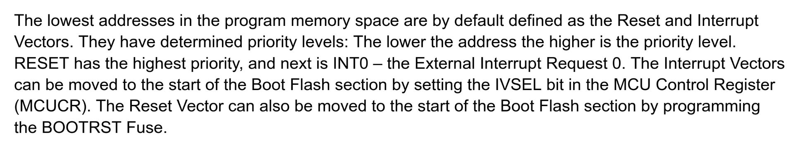
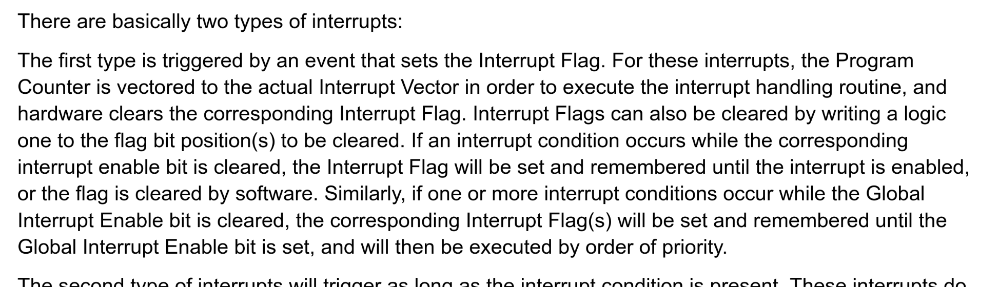

Ayke van Laethem
she/her
Bare metal programming from the ground up
Who am I
- MicroPython:
worked on nrf5x support long ago - TinyGo:
creator and maintainer - Maker of blinky jewelry
Topics for this talk
- How to read datasheets
- Linker scripts
- Interrupt vectors
- Blinking LEDs
"Hello world"
Blink LED
Turn on LED!
I/O registers!


Turn on LED
#include <stdint.h>
// Memory mapped I/O (values from the datasheet).
#define PORTB *(volatile uint8_t*)(0x23)
#define DDRB *(volatile uint8_t*)(0x24)
int main() {
DDRB |= 1; // set pin PB0 as an output
PORTB |= 1; // set pin PB0 high
// wait forever
while (1) {
}
return 0; // unreachable (satisfy the compiler)
}sbi 0x04, 0 ; set bit 0 in DDRB (0x24)
sbi 0x03, 0 ; set bit 0 in PORTB (0x23)
rjmp .-2 ; jump back one instruction (loop)Blink!
int main() {
DDRB |= 1; // set pin PB0 as an output
// main loop
while (1) {
for (long i=1000000; i != 0; i--) {
PORTB |= 1; // set pin PB0 high (set bit)
}
for (long i=1000000; i != 0; i--) {
PORTB &= ~1; // set pin PB0 low (clear bit)
}
}
return 0;
}Reset vector
 Reset vector
"The lowest addresses in the program memory space are by default defined as the Reset and Interrupt Vectors."
Translation: the reset handler and the interrupts are defined at the beginning of memory, probably at address zero.
Reset vector
"[...] the Program Counter is vectored to the actual Interrupt Vector in order to execute the interrupt handling routine, [...]"
Translation: the chip jumps to the location in memory where the interrupt is defined.
Interrupt vector table
jmp __vector_RESET ; address 0
jmp __vector_INT0 ; address 4
jmp __vector_INT1 ; address 8
jmp __vector_PCINT0 ; address 12
jmp __vector_PCINT1 ; address 16
jmp __vector_PCINT2 ; address 20
jmp __vector_WDT ; address 24
jmp __vector_TIMER2_COMPA ; address 28
jmp __vector_TIMER2_COMPB ; address 32
jmp __vector_TIMER2_OVF ; address 36
; etc...
Questions?
Slides:https://aykevl.nl/talks/2025-why2025-firmware/
How to find me:
@ayke@hachyderm.io
@aykevl
@aykevl